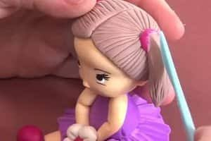

Biscuit

Aqui você tem acessso a todas as informações sobre o curso que tem interesse.
- Área:Artes/Manualidades
- Carga Horária:50hrs
- Nível:Básico
Sobre
O curso de Biscuit ensina a modelar massa fria (porcelana fria) para criar bonecos, flores e enfeites decorativos. É uma técnica acessível, ideal para quem quer começar no artesanato sem precisar de equipamentos especiais.
Objetivos
Ensinar técnicas de modelagem em massa de biscuit, desde o preparo da massa até o acabamento e pintura das peças, estimulando a criatividade e a produção artesanal.
Módulos
- Preparo e conservação da massa de biscuit
- Modelagem básica: formas e texturas
- Criação de flores e bonecos
- pintura e acabamentos das peças
- Projeto final:Peça decorativa completa
Requisitos
- Avental ou roupas que podem manchar
- Material responsável 100% pela unidade
- Não é necessário experiência prévia